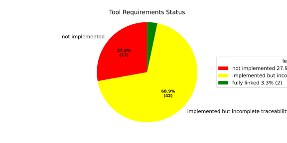
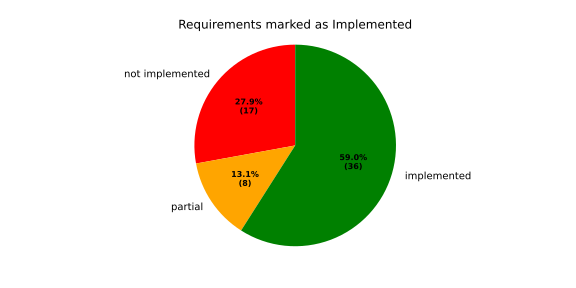
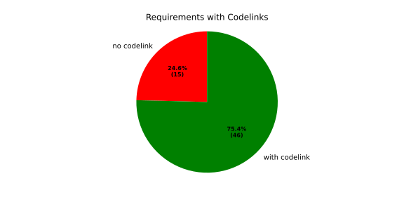
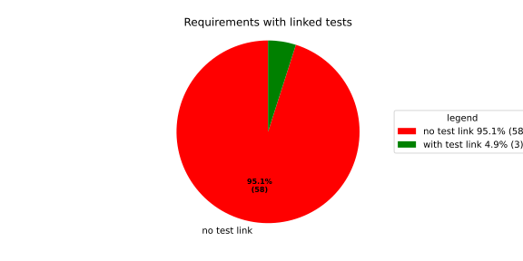
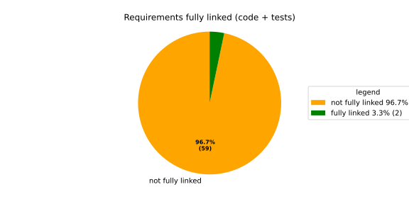
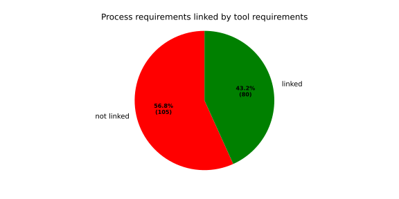

Tooling Coverage#
This page shows how the docs-as-code tooling covers process and tool requirements. It focuses on tooling capabilities offered to downstream repositories rather than on product-specific traceability inside those repositories.
Overview#

Jump to evidence tables:
How To Read These Levels#
The overview pie combines implementation state and traceability evidence:
not implemented:requirement has
implemented == NO.
implemented but incomplete traceability:requirement has
implemented == YESorimplemented == PARTIAL, but is missing at least one traceability link (code link and/or test link).
fully linked:requirement is implemented and has both
source_code_linkandtestlink.
Implementation labels used on this page:
NO: requirement is not implemented.PARTIAL: requirement is partly implemented.YES: requirement is implemented.
Why multiple pies are shown:
Requirements with Codelinksshows requirement-to-implementation traceability.Requirements with linked testsshows requirement-to-verification traceability.Requirements fully linkedis the strict roll-up (both links present).
These are intentionally separate because they answer different diagnostics: missing code links, missing test links, or both.
In Detail#




